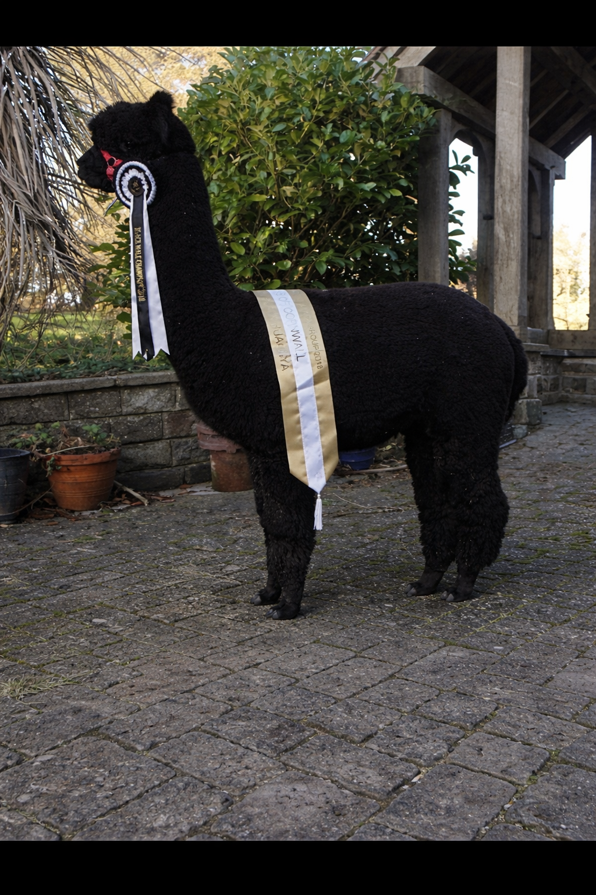
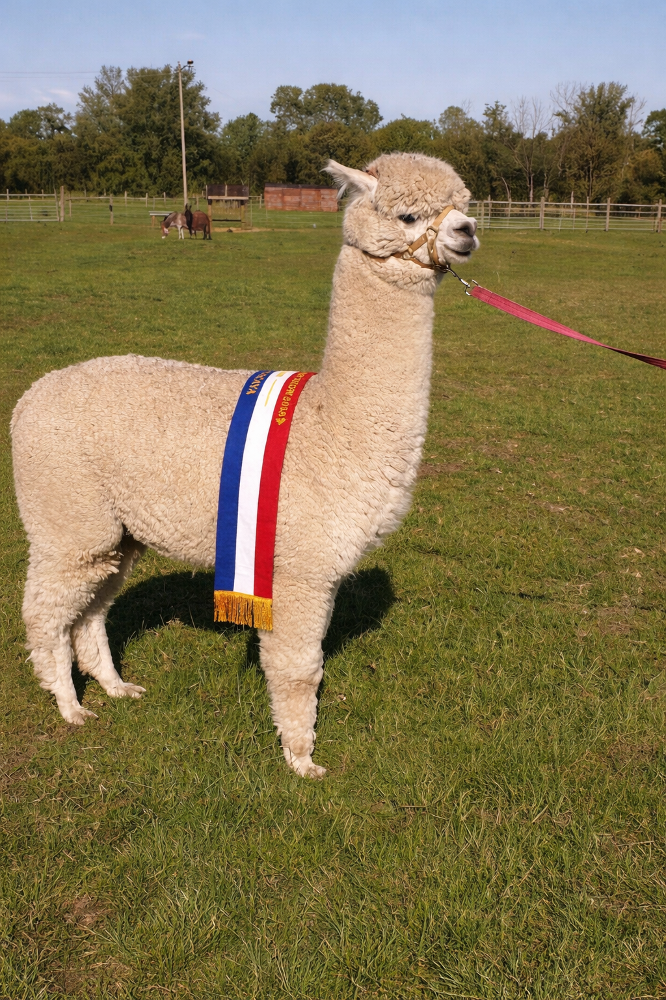

Alpaca Breeding in Northern Ireland
We offer high quality stud services from carefully selected award-winning Huacaya males known for excellent fleece quality, strong conformation and calm temperament.
Our carefully selected breeding males come from proven bloodlines and award-winning genetics. Please contact us for further details about availability and breeding arrangements.

2018 All Ireland Show Champion and 2019 Northern Ireland Show Champion. Cassius Clay is a striking solid black Huacaya male who has proven himself in both the Southern AAI and Northern NIAG show circuits, demonstrating excellent conformation, strong presence and outstanding fleece quality.
He has proven himself in both the Southern AAI and Northern NIAG show circuits, demonstrating excellent conformation, strong presence and outstanding fleece quality.Cassius comes from impressive award-winning genetics, being the grandson of Lillyfield Jack of Spades and Popham Thunder.
He carries a very fine, dense fleece combined with a well-balanced frame and an attractive head style. As a proven herd sire, Cassius consistently passes on his strong conformation, colour and quality fleece to his cria, many of which inherit his distinctive teddy-bear head, fluffy ears and calm temperament.

Urcuchillay Lorenzo is an impressive and eye-catching male who has achieved excellent results throughout his show career. In halter classes he has consistently performed at the highest level, winning every class he has been entered in and going on to secure two Championships.
Lorenzo combines a strong, macho frame with a beautiful, uniform fleece that is both fine and dense. His quality has also been recognised in fleece competitions, where he has placed highly at the National Fleece Show against strong competition, highlighting the outstanding consistency and character of his fibre.